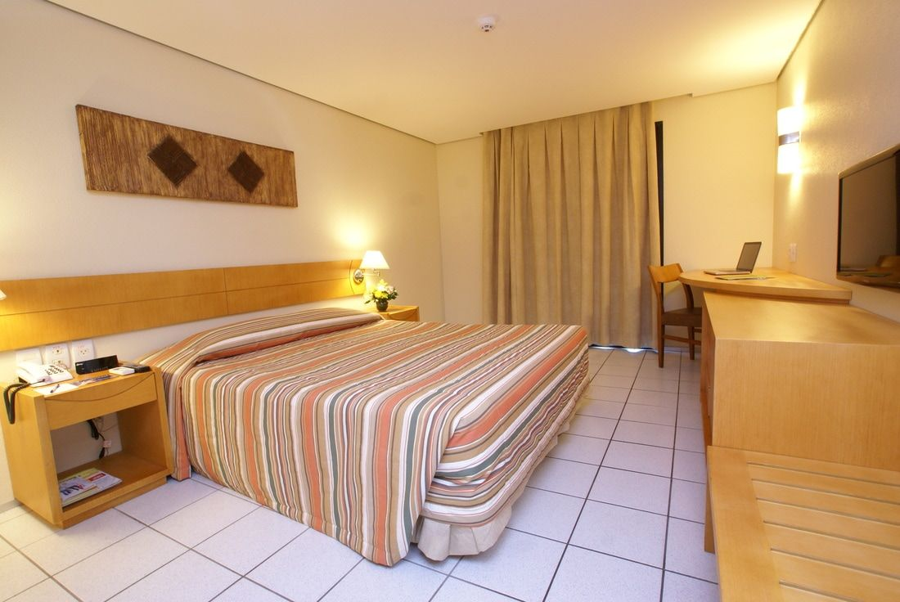
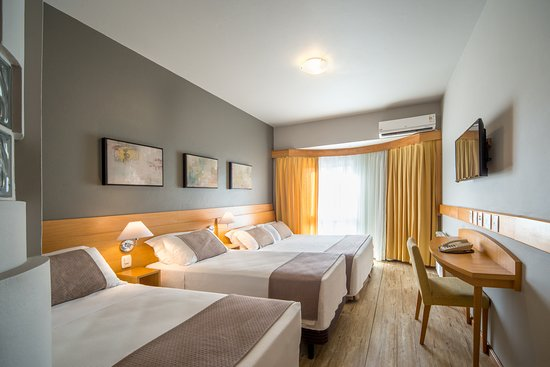

Sinta-se em casa
Ao acordar abra a janela e sinta a brisa da Praia. Hospede-se em um dos apartamentos cheios de história que tiveram a honra de receber nomes ilustres como Marlene Dietrich, Orson Welles e Gisele Bündchen. Sente-se e relaxe com uma taça de champanhe refrescante em um dos nossos sofisticados ambientes, decorados com móveis de madeira de mogno e freijó. Os banheiros ganham destaque com revestimento de mármore brasileiro rosa e branco.

Ricos em charme e personalidade arquitetônica, todos têm banheiro em mármore, alguns com banheira.Localizados nos dois prédios, principal e anexo, estes apartamentos são confortáveis e convidativos.
APARTAMENTO SUPERIOR COM VISTA PARA A CIDADE
Ricos em charme e personalidade arquitetônica, todos têm banheiro em mármore, alguns com banheira.Localizados nos dois prédios, principal e anexo, estes apartamentos são confortáveis e convidativos.

Comece o dia apreciando a exuberante vista da Praia.Localizados no prédio principal, alguns apartamentos desta categoria possuem sacadas estilo Juliet Balcony, que dá um charme extra no ambiente e decoração.
LUXO COM VISTA PARA A PRAIA
Comece o dia apreciando a exuberante vista da Praia.Localizados no prédio principal, alguns apartamentos desta categoria possuem sacadas estilo Juliet Balcony, que dá um charme extra no ambiente e decoração.
Chalé Hotel ©